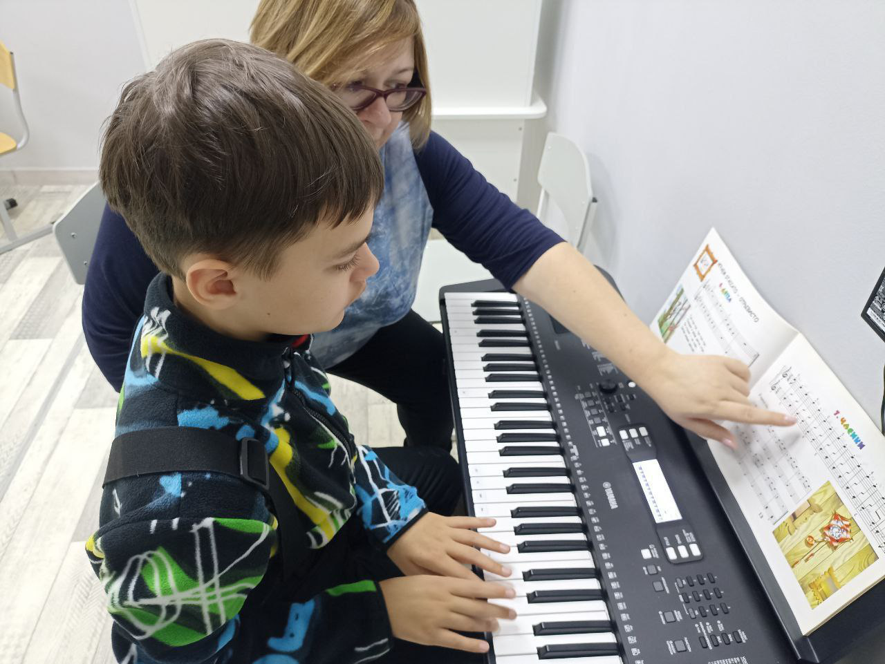
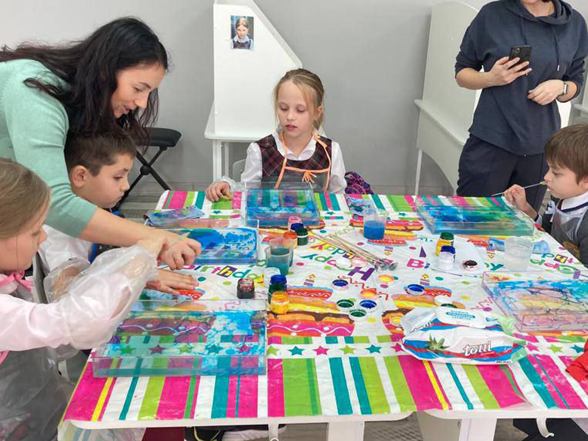
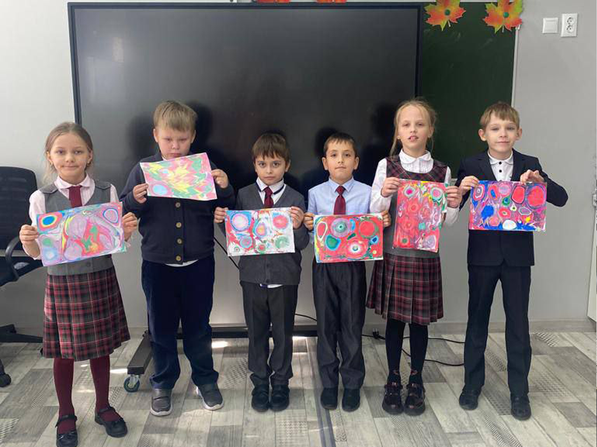
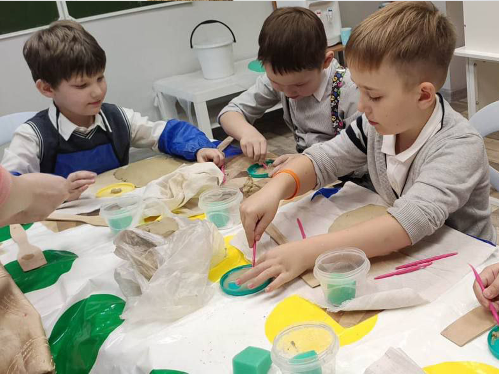
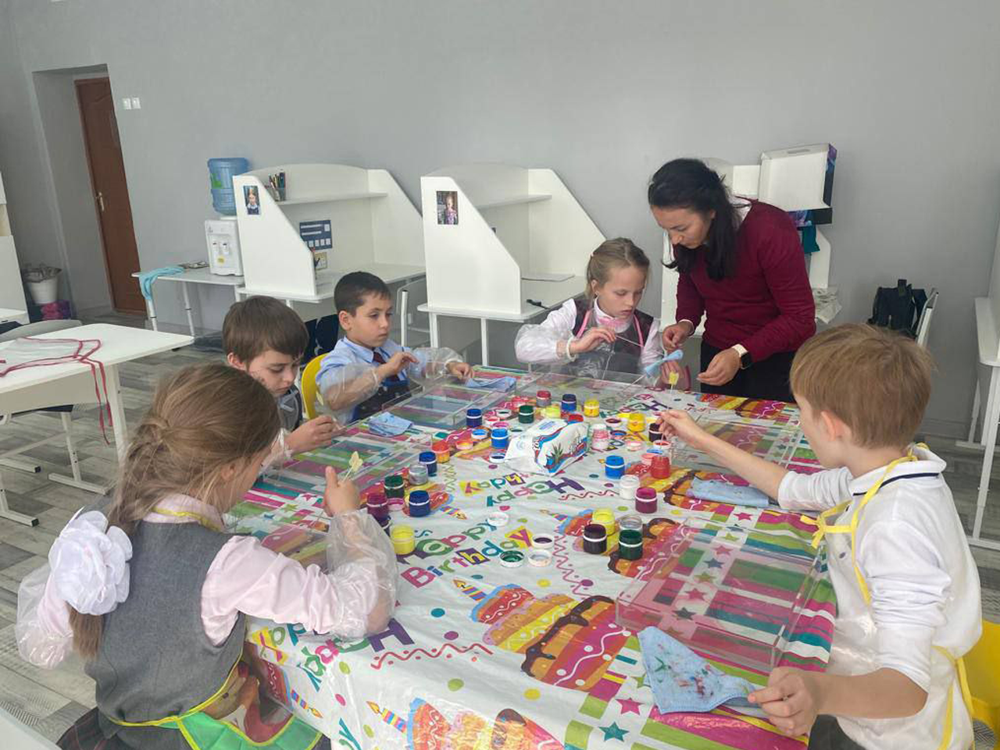
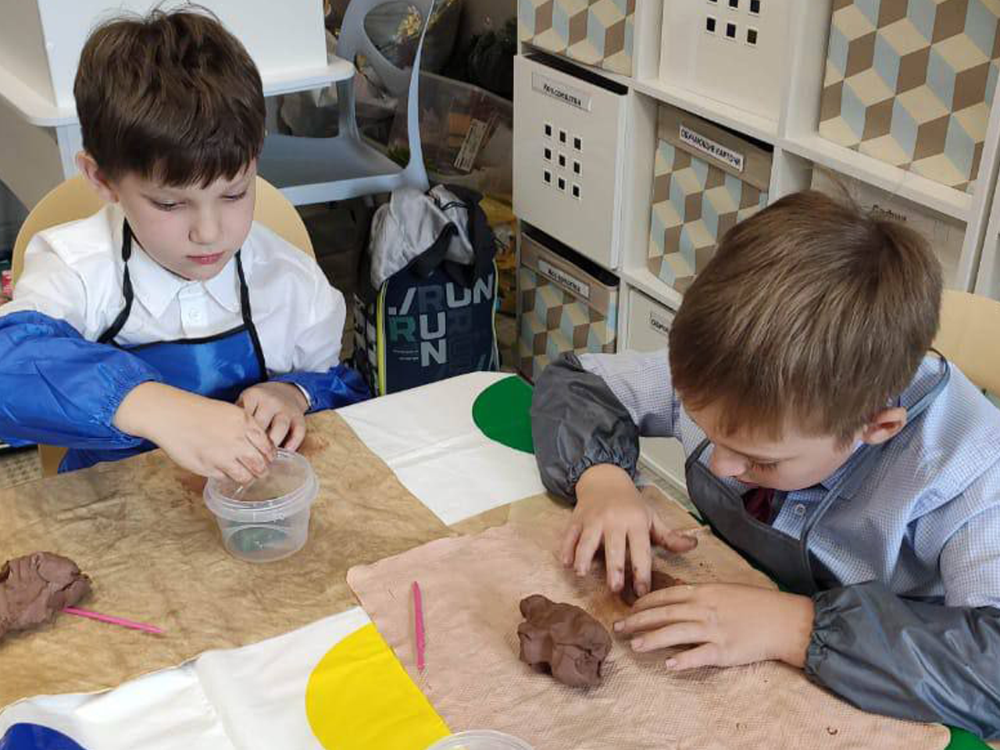
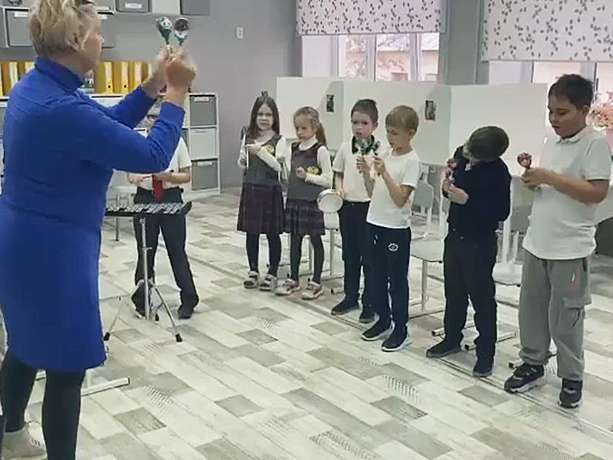

Проект "Инклюзивная творческая студия"

ЧТО ТАКОЕ ИНКЛЮЗИВНАЯ ТВОРЧЕСКАЯ СТУДИЯ?
Проект направлен на реализацию творческого потенциала детей и
подростков с РАС в сферах художественного и музыкального творчества, с
помощью профессиональных педагогов и нейротипичных сверстников.
ИСТОРИЯ ПРОЕКТА
Формирование и развитие творческих навыков у детей с РАС является
одним из направлений работы и в ресурсных группах, и в ресурсных
классах, и в учебно-тренировочной квартире, однако времени на
творческую деятельность всегда недостаточно. При этом многие дети с
аутизмом имеют креативные способности и прекрасный творческий
потенциал. В Казани для этих детей только начинает создаваться
инфраструктура дополнительного образования, причём адаптивные
творческие занятия практически не представлены в госучреждениях. Из-за
особенностей развития, поведения, сенсорных нарушений дети с РАС не
могут заниматься в стандартных условиях образовательного учреждения.
Мы решили создать для них проект «Инклюзивная творческая студия»,
который в 2022 году получил поддержку Фонда президентских грантов. На
протяжении 9 месяцев 2022/2023 учебного года 60 детей (и с РАС, и без
особенностей здоровья) получали бесплатные занятия по нескольким
творческим направлениям: театр, музыка (игра на фортепиано, вокал,
оркестр), декоративно-прикладное творчество (эбру, лепка из глины).
Проект имел невероятный успех, и количество желающих заниматься в
студии намного превысило количество доступных мест. Результаты своего
творчества ребята смогли представить на нескольких отчётных
мероприятиях: концертах, театральных постановках, выставках.
ТВОРЧЕСКАЯ СТУДИЯ СЕГОДНЯ
Пилотный проект успешно завершился в мае 2023 года. Большинство
родителей выразили большое желание, чтобы их дети и дальше участвовали
в инклюзивных творческих занятиях, пробовали себя в новых
направлениях. Специалисты проекта также вдохновлены на дальнейшую
работу. В настоящее время мы работаем над поиском средств для
продолжения проекта. Подготовлена и подана заявка на грант Республики
Татарстан. Частично творческие направления будут представлены в
проекте «Учебно-тренировочная квартира для людей с ментальными
нарушениями развития "Путь к жизни": масштабирование и развитие»,
получившем поддержку Фонда президентских грантов до конца 2024 года.
Мы уверены, что аутизм – не препятствие для творческой самореализации
и раскрытия новых способностей у детей и подростков.
ПОЛЕЗНЫЕ ССЫЛКИ
• Итоговое отчётное мероприятие проекта «Инклюзивная творческая студия»
• РАС и музыка. Музыкальное творчество как функциональный досуг и импульс для развития навыков
• «Теремок».Спектакль инклюзивной творческой студии «Просто другие»





